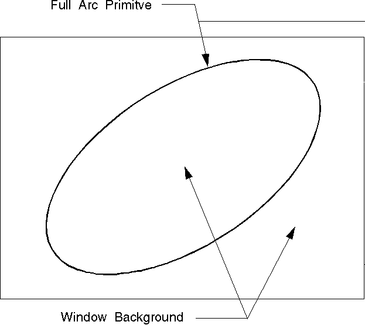

The foreground of a primitive is the primitive itself. For example, the foreground of a full arc primitive is the full arc, as shown in the following figure.
Foreground of a Primitive
The full arc primitive is drawn in a different color from the window background.
By default, the foreground color of all primitives is the color addressed by the index CLR_DEFAULT. In the default color table, this produces black on a graphics display. If the application replaces the default logical color table, CLR_DEFAULT produces the color addressed by index number 7 (CLR_NEUTRAL).